<!-- Navigációs sáv felépítéséért felelős html -->
<div *ngIf="navMegjelenites">
<nav class="nav-sav" [ngClass]="temaSzinN">
  <div class="menu" [ngClass]="temaSzin" *ngIf="menuMegjelenites">
    <div (click)="menuHA()">
      
      
    </div>
    <div (click)="menuHA()">
      <a class="nav-cim" [ngStyle]="{ color: (voros || sotet) ? 'white' : 'black' }" routerLink="/" (click)="profilMenuHA()">
        <p>SpeedFormula</p>
        </a>
    </div>
    <div class="menu-links">
      <ul class="nav-fo-menu">
        <li [ngClass]="temaSzinHover" class="nav-elo" (click)="menuESProfilMenuHA()" routerLink="/elo">
          <a class="nav-link" [ngStyle]="{ color: (voros || sotet) ? 'white' : 'black' }">
            
            
            ÉLŐ</a>
        </li>
        <li [ngClass]="temaSzinHover" class="nav-hirek" (click)="menuESProfilMenuHA()" routerLink="/hirek">
          <a class="nav-link" [ngStyle]="{ color: (voros || sotet) ? 'white' : 'black' }">
            
            
            Hírek</a>
        </li>
        <li [ngClass]="temaSzinHover" class="nav-versenyzok" (click)="menuESProfilMenuHA()" routerLink="/versenyzok">
          <a class="nav-link" [ngStyle]="{ color: (voros || sotet) ? 'white' : 'black' }">
            
            
            Versenyzők</a>
        </li>
        <li [ngClass]="temaSzinHover" class="nav-csapatok" (click)="menuESProfilMenuHA()" routerLink="/csapatok">
          <a class="nav-link" [ngStyle]="{ color: (voros || sotet) ? 'white' : 'black' }">
            
            
            Csapatok</a>
        </li>
        <li [ngClass]="temaSzinHover" class="nav-tortenet" (click)="menuESProfilMenuHA()" routerLink="/tortenet">
          <a class="nav-link" [ngStyle]="{ color: (voros || sotet) ? 'white' : 'black' }">
            
            
            Történet</a>
        </li>
        <li [ngClass]="temaSzinHover" class="nav-forum" (click)="menuESProfilMenuHA()"  routerLink="/forum">
          <a class="nav-link" [ngStyle]="{ color: (voros || sotet) ? 'white' : 'black' }">
            
            
            Fórum</a>
        </li>
      </ul>
    </div>

  </div>
  <div class="nav-keret">
    <div class="menu-gomb" (click)="menu()">
      <a class="nav-link" [ngStyle]="{ color: (voros || sotet) ? 'white' : 'black' }" (click)="profilMenuHA()">
        
        
        </a>
    </div>

      <a class="nav-cim" [ngStyle]="{ color: (voros || sotet) ? 'white' : 'black' }" routerLink="/" (click)="profilMenuHA()">
        <p>SpeedFormula</p>
        </a>

      <ul class="nav-fo">
        <li [ngClass]="temaSzinHover" class="nav-elo" (click)="profilMenuHA()">
          <a class="nav-link" [ngStyle]="{ color: (voros || sotet) ? 'white' : 'black' }" routerLink="/elo">
            
            
            ÉLŐ</a>
        </li>
        <li [ngClass]="temaSzinHover" class="nav-hirek" (click)="profilMenuHA()">
          <a class="nav-link" [ngStyle]="{ color: (voros || sotet) ? 'white' : 'black' }" routerLink="/hirek">
            
            
            Hírek</a>
        </li>
        <li [ngClass]="temaSzinHover" class="nav-versenyzok" (click)="profilMenuHA()">
          <a class="nav-link" [ngStyle]="{ color: (voros || sotet) ? 'white' : 'black' }" routerLink="/versenyzok">
            
            
            Versenyzők</a>
        </li>
        <li [ngClass]="temaSzinHover" class="nav-csapatok" (click)="profilMenuHA()">
          <a class="nav-link" [ngStyle]="{ color: (voros || sotet) ? 'white' : 'black' }" routerLink="/csapatok">
            
            
            Csapatok</a>
        </li>
        <li [ngClass]="temaSzinHover" class="nav-tortenet" (click)="profilMenuHA()">
          <a class="nav-link" [ngStyle]="{ color: (voros || sotet) ? 'white' : 'black' }" routerLink="/tortenet">
            
            
            Történet</a>
        </li>
        <li [ngClass]="temaSzinHover" class="nav-forum" (click)="profilMenuHA()">
          <a class="nav-link" [ngStyle]="{ color: (voros || sotet) ? 'white' : 'black' }" routerLink="/forum">
            
            
            Fórum</a>
        </li>
      </ul>

      <div [ngStyle]="{display: bejelentkezesMegjelenites ? 'flex' : 'none'}" class="nav-regjel-keret">
        <ul class="nav-regjel">
        <li [ngClass]="temaSzinHover" (click)="menuHA()">
          <a class="nav-link" [ngStyle]="{ color: (voros || sotet) ? 'white' : 'black' }" routerLink="/regisztracio">
            
            
            <p>Regisztráció</p></a>
        </li>
        <li [ngClass]="temaSzinHover" (click)="menuHA()">
          <a class="nav-link" [ngStyle]="{ color: (voros || sotet) ? 'white' : 'black' }" routerLink="/bejelentkezes">
            
            
            <p>Bejelentkezés</p></a>
        </li>
        </ul>
      </div>

      <div class="nav-bejel" [ngStyle]="{display: profilMegjelenites ? 'flex' : 'none'}">
        <ul>
        <li>
          <p [ngStyle]="{ color: (voros || sotet) ? 'white' : 'black' }">{{felhasznaloNev}}</p>
          
        </li>
        </ul>
      </div>

    </div>
</nav>

<div class="bejel-lenyilo" [ngClass]="temaSzinN" [ngStyle]="{display: profilMenuMegjelenites ? 'flex' : 'none'}">
  <ul>
  <li [ngClass]="temaSzinHover" (click)="profilMenu()">
    
    <a [ngStyle]="{ color: (voros || sotet) ? 'white' : 'black' }" [routerLink]="['/forum/profil', felhasznaloNev]">
     Fórum profil</a>
  </li>
  <li [ngClass]="temaSzinHover" (click)="profilMenu()">
    
    
    <a [ngStyle]="{ color: (voros || sotet) ? 'white' : 'black' }" routerLink="/beallitasok">
    Beállítások</a>
  </li>
  <li [ngClass]="temaSzinHover" (click)="kijelentkezes()" (click)="profilMenu()">
    
    
    <a [ngStyle]="{ color: (voros || sotet) ? 'white' : 'black' }" id="kijelentkezes">
    Kijelentkezés</a>
  </li>
  </ul>
</div>
</div>
<router-outlet></router-outlet>